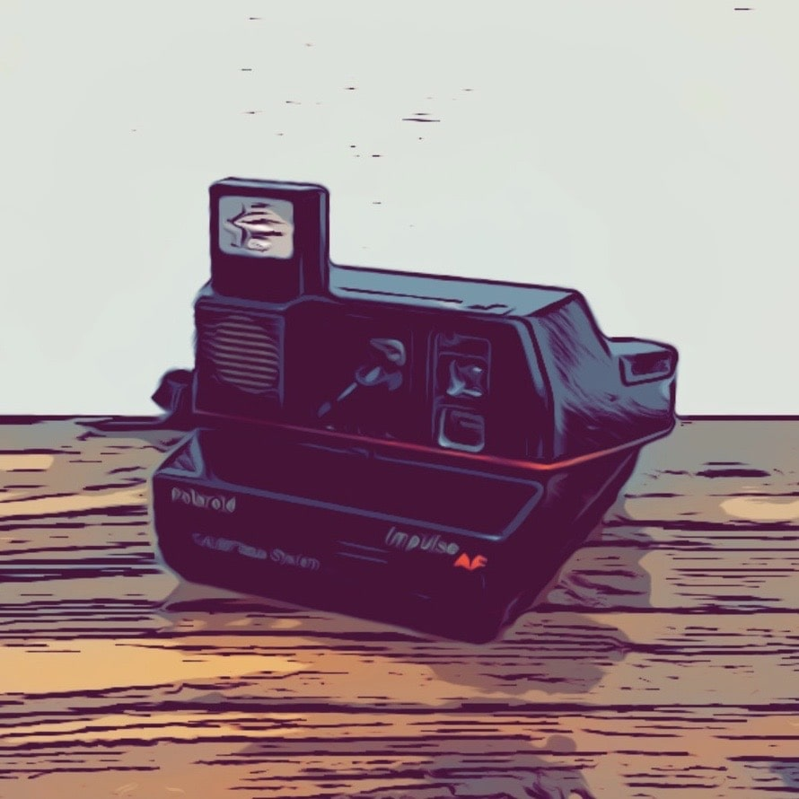

前回の記事でフィルムカメラを紹介したわけですが、今回は前回同様フィルムカメラ、その中でもあまり見かけることがなくなったポラロイドを紹介しようと思います。
さて、金欠気味の僕がカメラを2つも買った理由ですが、実はこれ無料（タダ）でもらいました。
というのも、交渉に交渉を重ね渋った結果、合計で約1500円ほど値引いてもらえました。（お店の方ありがとうございます）
つまり前回紹介したフィルムカメラを500円ほど引いてもらい、元値が1000円のポラロイドをタダで付けてもらったというわけです。
前置きはこの辺にしておいて、せっかくですから簡単に紹介していこうと思います。ちなみに今回紹介するポラロイドは◯◯という機種です。希少性はあまり高くないため中古ではかなり出回っているようです。
見た目重視・実用性皆無のフィルムカメラ
正直このカメラは実用性皆無です。完全にロマンという名の見た目・所有欲重視です。そう感じた理由を簡単に紹介していきます。
フィルムは今ではほとんど手に入らない
ポラロイド全般に言えることかもしれませんが、電池はフィルム側に埋め込まれています。その上、フィルムは入手が難しく高価です。
そのため動作確認すら難しく、写真を撮ろうだなんて考えるとさらに困難を極めます。
そもそもジャンク品扱い
そもそもこのカメラはジャンク品として売られていたため、動作確認されていません。
先述の通り、電池はフィルム側にあるので自分でも動作確認はできず。これは完全に観賞用として棚行きとなります。
まとめ：ロマンを求めて買うならあり
正直今の時代に置いてフィルムカメラはさておき、ポラロイドは実用性皆無です。
しかしロマンを求めて買うのならば大いにありな選択肢だと思います。部屋に一つ置いてあるだけで印象はかなり変わります。